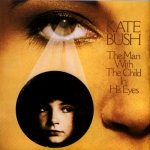
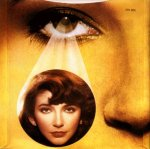

(These lyrics were originally from Andrew Marvick's
The Garden.)
 The Kick Inside page
The Kick Inside page
Album/Era
Alphabetical
Gaffaweb
"The Man With the Child in His Eyes"
The Kick Inside
Written by Kate Bush


- ("He's here! He's here!
- He's here! He's here!")
- I hear him, before I go to sleep
- And focus on the day that's been.
- I realise he's there,
- When I turn the light off and turn over.
- Nobody knows about my man.
- They think he's lost on some horizon.
- And suddenly I find myself
- Listening to a man I've never known before,
- Telling me about the sea,
- All his love, 'til eternity.
- Ooh, he's here again,
- The man with the child in his eyes.
- Ooh, he's here again,
- The man with the child in his eyes.
- He's very understanding,
- And he's so aware of all my situations.
- And when I stay up late,
- He's always waiting, but I feel him hesitate.
- Oh, I'm so worried about my love.
- They say, "No, no, it won't last forever."
- And here I am again, my girl,
- Wondering what on Earth I'm doing here.
- Maybe he doesn't love me.
- I just took a trip on my love for him.
- Ooh, he's here again,
- The man with the child in his eyes.
- Ooh, he's here again,
- The man with the child in his eyes.
©1978 EMI/Kate Bush
The Kick Inside page
{kind=link}
{kind=link}